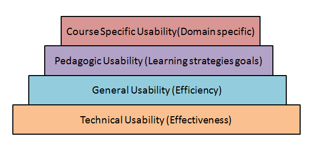
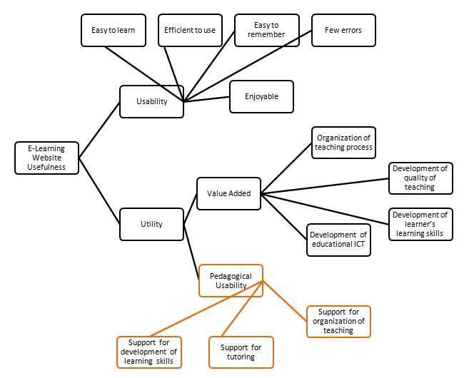

Shakshat Virtual Lab 
INDIAN INSTITUTE OF TECHNOLOGY GUWAHATI
Human Computer Interaction and E-learning
E-learning course cannot be effective unless we understand the human factors like the learner’s psychology, learning needs and behavior. HCI studies in this area attempt to explore learning interfaces, pedagogy and learning experience design.
Few research topics concerned with HCI and E-learning are-
Parallelism in learning interfaces.
Learner communication behaviors
Cognitive understanding using multimedia
Effectiveness of static and dynamic visuals
Interfaces for collaborative learning
/Learning through direct-touch horizontal interfaces
User interfaces for supporting innovation
Design rules for effective learning interfaces
The effectiveness and efficiency of an e-learning website can be determined by measuring user's interaction patterns while using such a site. Measuring usability has many dimensions. A tool specifically desined for e-learning is often used to collect various performance data. This data is analysed by the tool to reveal patterns. In this experiment a tool named as Usability Measurement Tool for E-Learning (UMTEL) has been developed specifically and is used.
One needs to understand the nature of e-learning as being different from normal classroom learning.
What is E-learning?
E-learning is the mode of learning through electronically supported teaching material. In a larger context it makes use of information and communication technology (ICT) to build a online learning community by connecting knowledge centers to distant learners. E-learning is looked upon as the most flexible and cost-effective mode of learning anytime, anywhere at your own pace mainly out-side class-room set-up.
Generic website usability criteria
1. Accessibility: Making users with disabilities perceive, understand, navigate, and interact with the website. In short avoiding anything that might keep a visitor from being able to access the information on a website. Few checklist points are mentioned below …..
Site load-time should be reasonable ( avoid flash & add-ons )
Text-to-background contrast should be adequate for readability
Font size/spacing should be easy to read
Images should have appropriate ALT tags.
Site should have a custom not-found/404 page.
2. Identity : A website should quickly and clearly project its identity , its goals and its trustworthiness to the user. Few checklist points are mentioned below …..
Company logo should be prominently placed
Use of tagline is recommended to make company's purpose clear
Use of tagline is recommended to make company's purpose clear
User should get the company information quickly
User should get contact information quickly
3. Navigation : User should be able to view contents of his relevance and interest with less efforts. Information architecture and navigation guidelines plays a vital role. Few checklist points are mentioned below …..
Main navigation items should be easily identifiable
Labels to navigation items should be clear & concise
Number of buttons/links should be reasonable
Links should be consistent & easy to identify
Support user with site search feature for easy access
4. Content : Content is the most important part. Content needs to be consistent, organized, and easy to navigate through . Few checklist points are mentioned below …..
Headings should be clear & descriptive
Styles & colors need to be consistent
Emphasis (bold, etc.) should be sparingly used
Content should be concise , to-the-point & self-explaining
URLs should be meaningful & user-friendly
Pedagogic Usability
Pedagogic Usability denotes whether the tools , content , interface and tasks of the e-learning environment support various learners to learn in various learning contexts according to selected pedagogical objectives. [1]
There are several layers of website usability in context of learning like context-specific, pedagogic, general and technical usability. This is as shown below

Pedagogical usability should be the focal point of e-learning design. The academic content comprises of the learning objects while the pedagogy means learning strategies and mechanisms.

[1]. Image reference : Silius, K. and Tervakari, A. "A multidisciplinary tool for the evaluation of usability,pedagogical usability, accessibility and informational quality of web-based courses " The Eleventh International PEG. (2003)